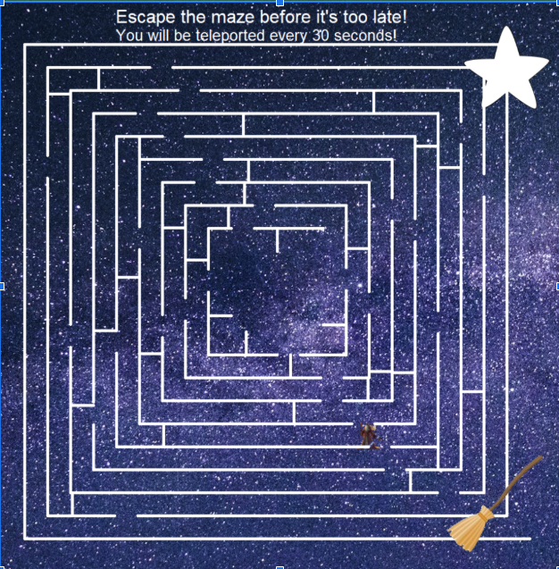
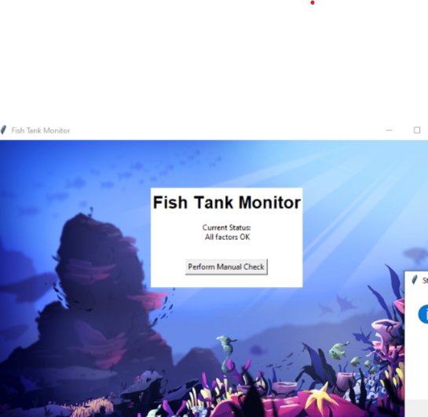
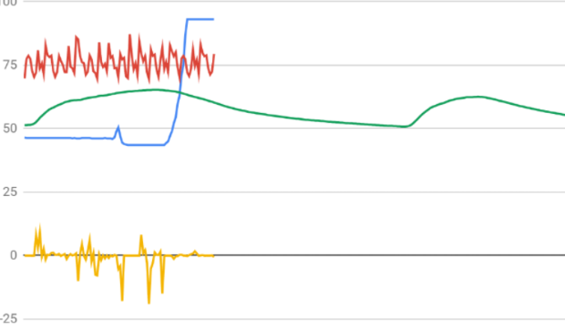

For this project me and my group design a game that asks you what kind of minion you want using if and elif commands. The options were a short, medium, or tall minion with either one or two eyes.
The turtle would then draw a minion for you based off of the description that you gave it we also gave the minion a background that was an image from the despicable me movie.
Project 1.2.5

For this project me and my group diesgn a game that is a maze with your character as a wizard. This game uses onkey commands for the wizards movement and if commands for the walls of the maze.
Once 30 seconds has passed if you haven't escaped the maze it teleports your character and you have another 30 seconds to reattempt an escape of the maze.
Project 1.3.1
For this project me and my partner designed a birthday card with a superhero animal theme. In the card you have to click on the party objects to get to the party screen and there is a birthday song in the background.
Scratch Project
For this project me and my partner designed a choose your own adventure game. We used scratch to design this game and the game functions by choosing the option that you would like by clicking on it. We also implmented music and background changes.
Phising Project

For this project me and my partner recieved code from a company that we then had to debug and implement security measures to prevent future phising attacks.
Project 3.1.6

For this project I recieved data from four different enviormental factors such as temperature and had to come to the conclusion of the environment that the rover was located in based on the data that I had recieved.